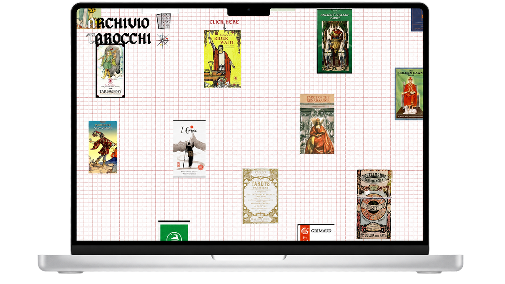
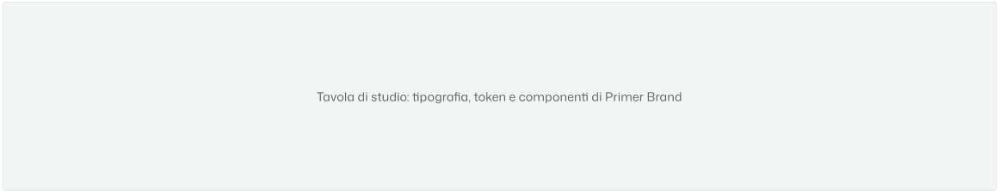

Aya moutaber · UI/UX Design · 2026
ARCHIVIO TAROCCHI
Un archivio visivo per oggetti grafici sottovalutati.
Un sistema di consultazione che legge i tarocchi come immagini, simboli, epoche e relazioni, a partire dal mazzo Rider Waite.

Studente
Aya Moutaber
Corso
ITS Web Design e strategie Digitali
Modulo
UX/UI Design - Web e Mobile
Anno
ITS Academy I-CREA, CFP Bauer Milano · 2026
progetto
Oggetti storici e visivi da osservare, confrontare e studiare.
contributo del progetto
Navigazione Mazzo
Scegli un mazzo dalla homepage e sfoglia il catalogo di tutte le carte divise per categoria.
Consultare la carta
Leggi la scheda completa: illustrazione, significato dritto e invertito, attributi simbolici.
Confrontare
Cerca una carta per icona e visualizza come appare in tutti i mazzi disponibili, a confronto.
Struttura
Assets
Torna all’inizioPrototipi
Torna all’inizioHighlights
Torna all’inizioAnche questa pagina è un progetto
Per raccontare ARCHIVIO TAROCCHI ho progettato una seconda interfaccia: questo case study. Ho studiato Primer Brand e combinato i suoi componenti per dare una forma coerente al racconto.

-
Sono partita dalla documentazione e dalle pagine GitHub: tipografia, colori, spazi e comportamenti formano un insieme di decisioni. Ho usato Primer Brand come vocabolario per costruire questa pagina.
-
Ho selezionato le schermate e dato a ogni contenuto una forma: Pillar per i livelli di lettura, Tabs per le viste, Testimonial per la riflessione. Gerarchie e spazi collegano i capitoli; i componenti si adattano alla larghezza disponibile.
-
Il lavoro continua nel browser: controllo la leggibilità, i collegamenti e i controlli da tastiera a larghezze diverse. La prova pratica richiede anche di saper spiegare e modificare il codice, mantenere Figma e sito coerenti e pubblicare il lavoro con GitHub Pages.